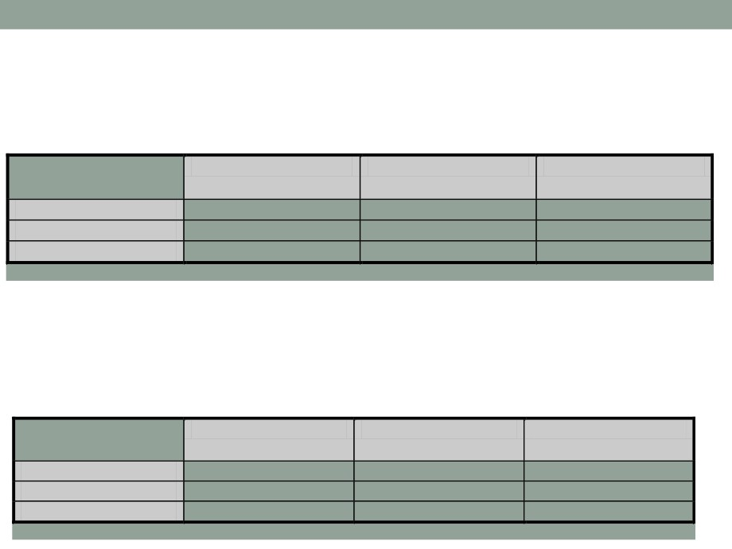
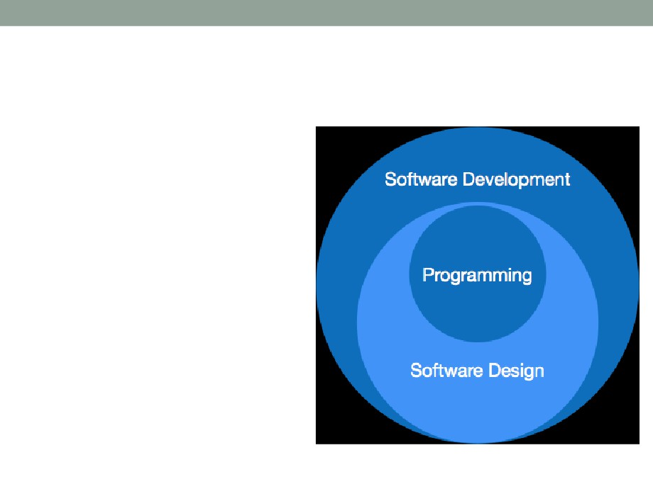

2
BSP metoda
• BSP je skraćenica za Business Systems Planning - za
planiranje IS preporučuje IBM
• Po ovoj metodologiji planiranje i analiza IS se vrši od vrha ka
dnu (osnovni podsistemi, veze, prioriteti, projektovanje
podsistema), a projektovanje i uvođenje IS se obavljaju od dna
ka vrhu (od prostijih funkcija ka složenijim)
• Polazi se od poslovnih ciljeva organizacije koje IS treba da
podrži ili unaprijedi, zatim se izdvajaju poslovni procesi, podaci,
potom se formiraju baze podataka
• BSP metodologijom se:
• Definiše opšta arhitektura informacionog sistema na osnovu poslovnih
procesa kao relativno najstabilnija komponenta realnog sistema
• organizaciona struktura, način upravljanja i odlučivanja su promjenljive
komponente
• Modeluju podaci kao osnova informacionog sistema, koji tretira
podatke kao posebne resurse u sistemu
3
Prioriteti i prednosti BSP-a
•
Prioriteti BSP-a su:
• Određivanje prioriteta ISa;
• Planiranje dugoročnog sistema zasnovanog na poslovnim procesima;
• Resursi sistema se selektuju tako da podržavaju ciljeve sistema;
• Resursi se optimizuju prema projektima koji donose veći dio prihoda;
• Popravka organizacije između funkcionalnih i tehničkih organizacionih
jedinica.
•
Prednosti BSP-a su:
• Reinženjering poslovnih procesa se odvija paralelno sa planiranjem
tehničkih unaprijeđenja;
• BSP garantuje da su podaci, aplikacije i arhitektura IS u skladu sa
zahtjevima poslovnih procesa;
• BSP garantuje stvaranje upravljivog ISa;
• Daje akcioni plan i determiniše potrebne resurse za implementaciju
ISa.
•
Nakon BSP ostaje odlična dokumentacija potrebna za
reinženjering poslovnih procesa.
4
Planiranje i uvođenje IS po BSP metodi
Poslovni ciljevi
Poslovni ciljevi
Poslovni procesi
Organizacija
organizacije
Informacioni sistem
Poslovni procesi
Baza podataka
Podaci
Uvođenje
Klase podataka
Planiranje
Projektovanje
5
BSP metoda
• BSP metoda predlaže deset aktivnosti koje vode
planiranju IS
• Postoje varijante BSP sa većim brojem aktivnosti ili grupa
aktivnosti
• Npr. BSP modifikacije se koriste danas kao osnovno sredstvo za
projektovanje ISa zasnovanog na www i tamo ima 12-13 aktivnosti
• Danas je sporost osnovni problem BSP, pa se rijetko
sprovodi u cjelosti
• Ako ima vremena BSP daje dugoročne uštede
• Ponekad posebna lica u organizaciji - sistem analitičari -
provode kontinualno BSP (ili neku sličnu metodologiju)
tako da je veliki dio rezultata već spreman kada se krene
u planiranje razvoja i projektovanje ISa.
6
Aktivnosti po BSP metodi
1. Davanje saglasnosti
2. Priprema za studiju
3. Održavanje prvog radnog sastanka
4. Definisanje poslovnih procesa
5. Definisanje klasa podataka
6. Analiza postojećeg IS
7. Analiza rezultata problema i koristi
8. Definisanje arhitekture IS
9. Određivanje prioriteta
10. Razrada plana realizacije
7
Aktivnosti po BSP metodi
1. Davanje saglasnosti
• Uključuje upoznavanje rukovodstva firme sa ciljem projekta
• Saglasnost na izradu projekta treba da na odgovarajući predlog
donese najviše rukovodstvo firme
• Rukovodstvo mora biti upoznato sa ciljevima i svim mogućim
problemima koji se prilikom projektovanja informacionog sistema
mogu javiti, troškovima i o problemima u kasnijoj implementaciji IS.
• Odabir projektanata i potpis ugovora o projektu,
• Raspisivanje tendera/oglasa za izbor projektanta sa kojim se sklapa
ugovor o projektu, kao i ugovor o dostupnosti dokumentacije firme i
saradnji firme prilikom izrade projekta.
• Saglasnost i dogovor o ustupanju odgovarajuće dokumentacije
koju firma posjeduje
• Projektant mora imati na raspolaganju sve neophodne dokumente,
šifrarnike, itd.
8
Aktivnosti po BSP metodi
2. Pripreme za studiju
• Detaljno definisanje plana aktivnosti,
• Definisanje vremenskog plana aktivnosti,
• Određivanje članova tima sa zaduženjima,
• Upoznavanje sistema,
• Obuka članova tima BSP metodi,
• ako članovi tima nisu aktivno učestvovali u projektovanju IS, ili nisu
upoznati sa metodologijom rada
• Određivanje ljudi za intervju,
• važan korak jer bi intervju trebao da bude osnovni izvor informacija
potrebnih za projektovanje informacionog sistema
• Prikupljanje statuta, pravilnika, šifrarnika,
• Priprema prvog radnog sastanka
9
Aktivnosti po BSP metodi
3. Prvi radni sastanak
• Prvom radnom sastanku po preporukama BSP metodologije
prisustvuju:
• Članovi tima spolja,
• Članovi tima iz organizacije,
• postoji određen odabrani broj ljudi unutar organizacije koji pomažu realizaciju IS
• Rukovodstvo,
• Ljudi koji će biti intervjuisani,
• Administrator projekta iz organizacije
• Sastankom rukovodi lice koje rukovodi izradom studije
• Tematske cjeline sastanka:
• ciljevi studije, mogućnosti realizacije i očekivani rezultati
• organizacija i njene perspektive
• postojeći informacioni sistem
• mogući problemi
10
Aktivnosti po BSP metodi
4. Definisanje poslovnih procesa
• Jedan od najvažnijih koraka
• BSP predlaže grupisanje poslovnih procesa u sledeće tri
grupe
• Procesi planiranja i upravljanja,
• Procesi proizvodnje i usluga,
• Pomoćni procesi.
• Poslednja dva se definišu preko četiri faze životnog
ciklusa:
• Faza 1: Planiranje
• Faza 2: Proizvodnja i tehnologija
• Faza 3: Praćenje proizvodnje
• Faza 4: Zatvaranje ciklusa
11
Faze poslovnih procesa
2. Proizvodnja i
3. Praćenje
4. Zatvaranje
1. Planiranje
tehnologija
proizvodnje
ciklusa
Tehnološka priprema
Istraživanje tržišta
Upravljanje zalihama
Prodaja
konstrukcija
Planiranje proizvodnje
Terminiranje
Kontrola kvaliteta
Obrada narudžbi
Tehničko-tehnološka
Pakovanje i
Kalkulacija cijena
Otpremanje robe
dokumentacija
skladištenje
Plan nabavke materijala
Disponiranje materijala
Prijem robe
Transport do kupca
Upravljanje
Planiranje kapaciteta
proizvodnjom
Nabavka
12
Primjer poslovnih procesa
Novac
Oprema
Kadrovi
Tržište
Materijal
Planiranje
Finansijski
Investiocioni
Plan kadrova
Plan
Planiranje
plan
plan
prodaje
nabavke
Proizvodnja
Nabavka,
Nabavka,
Prijem radne
Ponuda
Nabavka
novac,
montaža,
snage
robe
materijala
i tehnologija
banke,
puštanje u
kupci
pogon
Praćenje
Računovod
Održavanje
Popunjavanje
Marketing
Praćenje
stvo
radnih mjesta
zaliha
proizvodnje
Zatvaranje
Raspodjela,
Rashodovanje
Penzionisanje
Isporuka
Trebovanje
fondovi,
robe
materijala
ciklusa
akcije
13
Primjer sheme poslovnih procesa/organizacije
• Najvažniji rezultat vezan za poslovne procese je matrica
ORGANIZACIJE/PROCESI
grupe srodnih procesa i procesi iz datih
grupa
PROCESI IZ GRUPE PLANIRANJE
PROCESI IZ GRUPE PROIZVODNJA
Strat.Plan.
Istr.Trž.
Ekon.Anal.
Upr.zalih.
Upr.proizv.
Održavanje
Direktor
x
/
/
Org.jed.1
x
z
x
Org.jed.2
z
organizacione jedinice
Oznake
preduzeća i važni
x
organizacija ili pojedinac glavni u procesu;
pojedinci
/
uključeni u proces
z
djelimično uključeni u proces.
14
Aktivnosti po BSP metodi
5. Definisanje klasa podataka
•
Klasa podataka predstavlja grupu podataka koji su logički povezani
(podaci o kupcu, proizvodu, narudžbi,...),
•
Klase podataka se mogu identifikovati:
• preko podataka o poslovnim entitetima i
• preko definisanih poslovnih procesa
•
Entitet je neka posebnost - na najvišem nivou su:
• predmeti poslovanja;
• subjekti poslovanja;
• partneri u poslovanju;
• obaveze u poslovanju;
• transakcije za realizaciju poslovanja.
•
Nakon definisanja uopštenih entiteta prelazi se na definisanje
posebnih.
•
Definisanje klasa podataka na osnovu poslovnih procesa je često
jasnija procedura
• Pojedine klase podataka mogu tada biti ulazi i izlazi iz pojedinog procesa.
• Npr. Proizvod, Kupac i Narudžba mogu biti ulazni podaci za proces PRODAJA
čiji je izlaz (izlazna klasa podataka) Faktura.
15
• Veoma je važno razložiti odnos pojedinih poslovnih
procesa i klasa podataka
• matrica u čije kolone se upisuju pojedine klase podataka a u vrste
procesi, sa namjerom da se uoči koji poslovni procesi kreiraju
podatke a koji koriste ulazne podatke
Klase podataka
A
B
C
D
Procesi
ISPITIVANJE TRŽIŠTA
C
U
U
DUGOROČNO PLAN.
U
C
U
****
Rezultat ove faze je tabela PROCESI/KLASE PODATAKA
U
proces koristi podatak kao ulaz
C
podatak je rezultat rada procesa
16
Aktivnosti po BSP metodi
6. Analiza postojećeg IS
• Najvažniji elementi u analizi postojećeg IS-a su analiza
kako IS podržava poslovanje i koje su jedinice
obuhvaćene postojećim IS
• Ova analiza se sprovodi kroz set pitanja:
• Koje su aplikacije trenutno u upotrebi (koji programi i sa kojom
namjenom)
• Kako te aplikacije podržavaju postojeće poslovanje
• Koje podatke koriste te aplikacije (ovo pitanje pomaže u traženju
preklapanja izmedu pojedinih aplikacija, mogućnost unifikacije
programa itd)
• U ovom dijelu BSP prave se tri matrice:
• Matrica APLIKACIJE/ORGANIZACIJE
• Matrica APLIKACIJE/PROCESI
• Matrica APLIKACIJE/KLASE PODATAKA.

17
ORGANIZACIJE/APLIKACIJE
C
organizacija trenutno koristi aplikaciju
P
planira da koristi aplikaciju u novoj organizaciji ISa
ORG.JED.
DIREKTOR
Jedinica 1
Jedinica 2
APLIKACIJA
OBRADA LD
CP
CP
KNJIGOVODSTVO
C
C
P
OBRADA NARUDŽ.
P
PROCESI/APLIKACIJE
C
proces trenutno koristi aplikaciju
P
planira da koristi aplikaciju u novoj organizaciji ISa
PROCES
Ispitivanje tržišta
Dugoročno planiranje
Nabavka
APLIKACIJA
OBRADA LD
CP
CP
KNJIGOVODSTVO
C
CP
OBRADA NARUDŽ.
CP
P
C
18
APLIKACIJE/KLASE PODATAKA
X
aplikacija koristi klasu podataka
KLASA PODAT.
Kupci
Porezi
Radni nalog
APLIKACIJA
OBRADA LD
X
X
KNJIGOVODSTVO
X
X
OBRADA NARUDŽ.
X
X
• Tabele su samo primjer kako izgledaju pojedine matrice, u
stvarnosti su znatno složenije
19
Aktivnosti po BSP metodi
7. Analiza rezultata, problemi i koristi
•
U ovoj fazi se vrši intervijuisanje zaposlenih različitim pitanjima
koja bi trebalo da odgovore o mogućnosti daljih unapređenja
sistema
•
Pitanja na intervjuju treba da budu konkretna, npr.:
• Koji su najveći problemi koji se javljaju u radu?
• Šta vas sprečava da ih rješavate?
• Da li su ti problemi u informacionoj sferi?
• Koje su za vaš posao posebno važne informacije?
• Koju biste informaciju željeli da vam novi informacioni sistem
omogući?
• ...
•
Kod obrade odgovora na intervjuu treba razdvojiti probleme
neinformacione i informacione prirode
• Problemi neinformacione prirode ne mogu se otkloniti informacionim
sistemom - ako su identifikovani treba ih zanemariti ili proslijediti
odgovarajućim organima u organizaciji
• Problemi informacione prirode - dvije kategorije:
• Problemi koji postoje u postojećem informacionom sistemu
• Informacione potrebe
• Veoma je važno uočiti procese iz prethodnog IS koji se sada ne
smiju izostaviti niti pokvariti a koji se mogu unaprijediti
• Ako neki veoma važan proces u staroj implementaciji IS u novoj može biti
izostavljen, treba predvidjeti njegovo funkcionisanje paralelno sa novim
rješenjima do potpunog zaživljavanja novih rješenja
• Jedno od preglednih sredstava za ovu analizu je tabela u čijim
kolonama treba unijeti: Osnovni problem; Rješenje; Važnost;
Informacione potrebe; Proces koji uzrokuje; Proces na koji utiče
Osnovni
Rješenje
Važnost
Informacione
Proces
koji
Proces na koji
problem
potrebe
uzrokuje
utiče
***
***
***
***
***
***
20
21
Aktivnosti po BSP metodi
8. Definisanje arhitekture IS
• Opšta arhitektura IS definiše se na osnovu procesa i
klasa podataka koji su utvrđeni u prethodnim fazama
(matrica PROCESI/KLASE PODATAKA)
• U vrstama se nalaze procesi poređani po redosljedu
nastanka
• U kolonama se nalaze klase podataka po procesima -
prva klasa podataka koju kreira prvi proces, sledeća koju
kreira drugi proces i td.
• Tako preuređena matrica bi trebala da bude približno
dijagonalna sa blokovima koji predstavljaju pojedine
podsisteme budućeg informacionog sistema
22
Klase
A
B
C
D
E
F
G
H
I
J
K
L
Procesi
Proces 1
C
U
U
Proces 2
U
C
U
U
U
Proces 3
U
U
C
U
U
U
Proces 4
U
U
C
Proces 5
U
U
U
C
C
Proces 6
U
U
C
Proces 7
U
U
U
C
C
Proces 8
U
C
Proces 9
U
U
U
C
C
Proces 10
U
U
C
Primjer preuređene matrice procesi/klase podataka sa definisanim poslovnim
podsistemima.
23
Aktivnosti po BSP metodi
9. Određivanje prioriteta
•
Kriterijumi za određivanje prioriteta:
• Potencijalna korist
• Uticaj na poslovanje
• Obuhvaćeni broj radnika i organizacionih jedinica,
• kvalitativni efekti,
• efekti na ostvarenje opštih ciljeva
• Procjena uspjeha realizacije
• Prihvatljivost,
• trajanje implementacije,
• raspoloživi resursi
• Potražnja
• Vrijednost postojećeg sistema,
• veze sa drugim sistemima, itd.
•
Uobičajena procedura je da se po svim kriterijumima dodjeli ocjena
od 1 do 10 pojedinim podsistemima
•
Zatim se podsistemi sortiraju po ocjeni
•
Veći prioritet za uvođenje imaju oni podsistemi, aplikacije i ostali
elementi sistema koji imaju veći skor
24
Aktivnosti po BSP metodi
10. Razrada plana realizacije
• Plan realizacije treba da počiva na:
• logici uvođenja pojedinih podsistema - ne može se uvesti neki podistem,
bez obzira na prioritet, prije drugog podsistema čije rezultate koristi
• utvrđivanju prioriteta.
• Ovu fazu treba da vode ljudi sa iskustvom.
• Može da dođe do primjene uvođenja podsistema i da neki koji
ima veći prioritet bude uveden kasnije ako to zahtjeva
odgovarajuća data situacija.
25
Rezultat BSP-a
• Ako se BSP ne može provesti u cjelosti ipak bi bilo korisno
dobiti neke podatke iz njega ili neke njemu adekvatne
metodologije. Osnovno što nam je potrebno su:
• Klase (tipovi) podataka (faza 5)
• Procesi (procesi obrade ili aktivnosti) (faza 4)
• Podaci su neophodni da bi se izvršilo projektovanje baza
podataka, softvera kao globalne faze kod projekta ISa
• Procesi su neophodni da bi se uvodile i automatizovale
pojedine funkcije
• Poželjno je isplanirati vrijeme za definisanje prioriteta i plana
realizacije i uvođenja (ma kako grubog) ili podjele u podsisteme
PROJEKTOVANJE I
ANALIZA SOFTVERA
Uvod
• Softversko inženjerstvo se odnosi na projetovanje i razvoj
softverskih proizvoda koristeći poznate naučne principe,
metode i procedure
• Rezultat projektovanja i razvoja softvera je efikasan i
pouzdan softver
• Razvoj i upravljenje softverskim projetom je širi pojam od
samog projektovanja softvera, jer uključuje komunikaciju,
podršku i sl.
Pojam i razvoj
• Softver nije samo programski kod; program je izvršni kod koji
služi za vršenje određenih proračuna, dok softver čini skup
izvršnih programskih kodova, pridružene biblioteke i
dokumentacija
• Razvoj softvera - proces koji uključuje inicijalni nastanak i
razvoj softvera, održavanje i ažuriranja (updates), do nastanka
željenog proizvoda koji zadovoljava postavljene zahtjeve
• Faze razvoja se kreću od prikupljanja zahtjeva, kreiranja
prototipa softvera, podrška od strane korisnika kojima je softver
namijenjen, kako bi se napravile određene izmjene, ažuriranja,
do konačne verzije softvera
• Razvoj tehnologije i novi zahtijevi korisnika često zahtijevaju nove
funkcionalnosti, koje se najčešće dodaju odgovarajućim izmjenama
kroz nove, ažurirane verzije postojećeg softvera
Razvoj softvera
•
Softver se može kategorisati u 3 kategorije, zavisno od tipa primjene:
• S-tp (static-type) - softver koji striktno radi na osnovu definisanih specifikacija i rješenja. Metodi i
rješenja su poznati i prije procesa pisanja koda. Ovaj tip softvera je najmanje podložan promjenama, i
spada u kategoriju najjednostavnijih (npr. kalkulator)
• P-tip (practical-type) - ova vrsta softvera predstavlja skup procedura, i jasno je definisano šta
procedura može da uradi. Kod ove vrste softvera, specifikacije su jasno definisane, ali ne i rješenja
(npr. igrice)
• E-tip (embedded-type) - ova vrsta softvera radi u skladu sa zahtjevima realnog okruženja. Često se
dešavaju promjene, koje prate promjene u zakonima, porezima itd. u stvarnim situacijama (npr. softver
za online trgovanje)
•
E-tip softvera se razvija i mijenja prema sledećim pravilima:
• Stalna promjena - u ciju prilagođavanja promjenama u realnom svijetu, inača postaje beskoristan
• Povećanje kompleksnosti - razvojem sistema raste i njegova kompleksnost
• Očuvanje familijarnosti - upoznavanje sa softverom ili znanje o tome kako je razvijen, zašto je
razvijen na taj način itd.
• Stalni rast - u cilju rješavanja određenih poslovnih problema, rast softvera prati rast problema za koje
se koristi
• Pad kvaliteta - ukoliko se ne sprovode adekvatne mjere održavanja i ažuriranja, kvalitet rada opada
• Sistemi za povratne informacije - sadrže povratne petlje i povratne informacje iz više nivoa u cilju
praćenja rada i mofifikacije sistema
• Samoregulacija - proces razvoja je samoragulišući sa približno normalnom raspodjelom procesa
• Organizacionalna stabilnost - prosječna efektivna aktivnost sistema je približno konstantna tokom
životnog vijeka proizvoda

Razvoj softverskog sistema
• Razvoj softvera
• Prikupljanje zahtjeva
• Dizajn softvera
• Programiranje
• Dizajn softvera
• Dizajniranje
• Održavanje
• Programiranje
• Programiranje
• Pisanje koda
• Testiranje
• Integracija
Zahtjevi softverskog sistema
• Osnovni zahtijevi se odnose na:
• Veličinu
• Skalabilnost
• Cijenautroškove
• Prilagodljivost
• Upravljanje kvalitetom
• Efikasnost i tačnost
• Sigurnost
• ...
Životni ciklus softvera
• Životni ciklus razvoja softvera (Software Development Life
Cycle - SDLC) je definisana sekvenca faza razvoja od
početka do konačnog razvoja softvera
Komunikacija
Testiranje
Prikupljanje zahtjeva
Integracija
Studija izvodljivosti
Implementacija
Životni ciklus
Analiza sistema
Funkcionisanje
Dizajn softvera
Održavanje
Pisanje koda
Odbacivanje
Životni ciklus softvera
•
Komunikacija - prvi korak u kojem korisnik inicira zahtjev za
odgovarajućim softverskim proizvodom
•
Prikupljanje zahtjeva - razgovori o definiciji i oblasti problema,
prikupljanje što je moguće više informacija o zahtjevima korisnika,
zahtjevima sistema i funkcionalnim zahtjevima. Prikupljanje zahtjeva
se obavlja na sledeće načine:
• Proučavanjem postojećeg ili zastarjelog softvera
• Vođenjem intervjua korisnika i programera
• Analizom baze podataka
• Prikupljanjem odgovora iz upitnika
•
Studija izvodljivosti - nakon prikupljanja podataka daje se grubi
plan procesa planiranog softvera, i na osnovu toga analizira da li taj
sofver može da zadovolji tražene zahtjeve
•
Analiza sistema - definiše se plan razvoja i raspored kako bi se
došlo do najboljeg mogućeg rješenja, uzimajući u obzir:
• Razumijevanje ograničenja softvera
• Učenje o problemu koji se obrađuje
• Identifikovanje uticaja na organizaciju ili osoblje i td.
Životni ciklus softvera
•
Dizajniranje softvera - ulazni podaci u ovom koraku su informacije
prikupljene u fazi prikupljanja zahtjeva, a izlaz su logički i fizički
dizajn, u formi logičkih dijagrama i pseudo-kodova
•
Pisanje koda - faza programiranja, koja je prvi korak u
implementaciji definisanog dizajna
•
Testiranje - vrši se u više faza, tokom samog pisanja koda, testiranje
modula, programa, proizvoda, i kod krajneg korisnika u cilju
detektovanja a zatim i ispravljanja grešaka
•
Integracija - softvera sa bibliotekama, bazama podataka i ostalim
programima
•
Implementacija - instaliranje softvera na korisničkim uređajima i
odgovarajuće konfigurisanje
•
Funkcionisanje i održavanje - efikasno korišćenje proizvoda, obuka
korisnika, ažuriranja, ...
•
Odbacivanje - u slučaju kada softver više ne zadovoljava potrebe
korisnika. Ova faza podrazimjeva i arhiviranje podataka i
odgovarajućih softverskih komponenti
Modeli životnog ciklusa razvoja
• Najčešći modeli razvoja softvera se mogu opisati preko
sledećih modela:
• Model vodopada (Waterfall Model)
• Iterativni model (Iterative Model)
• Spiralni model (Spiral Model)
• V - model
• Model velikog praska (Big Bang Model)
Model vodopada
• Najjednostavniji model - sve faze idu jedna za drugom
• Tek kada se završi jedna faza počinje druga
• Ovaj model podrazumijeva da je svaka faza dobro
planirana i kompletno završena, kako eventualni problemi
koji mogu da nastanu u nekom trenutku nemaju veze sa
prethodnom fazom
• Ukoliko su ostala neka neriješena pitanja iz prethodne faze,
postupak razvoja može da ima probleme - sekvencijalna priroda
modela ne dozvoljava vraćanje unazad
• Ovaj model se preporučuje kada su dizajneri prethodno
već dizajnirali i razvijali sličan sistem/softver tako da su
svjesni problematike
Model vodopada
Prikupljanje
zahtjeva
Analiza
sistema
Pisanje
koda
Testiranje
Implementa
cija
Funkcionisa
nje i
održavanje
Iterativni model
• Projektovanje i razvoj softvera se obavlja u iteracijama -
koraci se ponavljaju nakon svakog ciklusa
• Sistem/softver se razvija prvo u maloj razmjeri, a potom
se u svakoj iteraciji dodaju i testiraju nove funkcije i
moduli
• Svaki ciklus ima više funkcija i mogućnosti od prethodnog
• Pošto svaki ciklus sadrži mali dio softvera, upravljanje
razvojem je jednostavnije, ali zahtijeva više resursa
Iterativni model
Pisanje
Pisanje
Testiranje
Testiranje
koda
koda
Verifikacij
Verifikacij
Dizajn
Dizajn
a
a
n-1
n
n+1
Spiralni model
• Predstavlja kombinaciju iterativnog i nekog drugog
modela životnog ciklusa
• Uzima u razmatranje rizik, koji često ostane zanemaren
tokom faza razvoja
1. Model počinje definisanjem ciljeva i ograničenja na
kraju jedne iteracije (ciklusa)
2. Sledeća faza je izrada prototipa, koja uključuje i analizu
rizika
3. Potom se koristi neki odabrani model razvoja
4. Konačno se priprema sledeća iteracija
V-model
• Glavna mana modela vodopada je ta što se na sledeću
fazu može preći tek kada je tekuća završena, te nema
mogućnosti povratka na prethodnu fazu
• V-model omogućava testiranje u svakoj fazi, i unazad
• U svakoj fazi se kreiraju testovi kako bi se verifikovalo i
potvrdilo odrađeno
• Npr. u fazi prikupljanja zahtjeva, kreiraju se testovi u skladu sa
zahtjevima. Kada je kreiran prizvod, testovi iz ove faze se koriste
za provjeru ispunjenosti zahtjeva
• Na taj način verifikacija i validacija idu paralelno
Big Bang Model
• Najjednostavniji model po svojoj formi
• Zahtijeva malo planiranja, dosta programiranja i značajna
sredstva
• Model baziran na konceptu Velikog praska - nakon njega
je kreiran veliki broj galaksija, planeta i zvijezda
• Slično tome, spajanjem velikog broja programa uz
začajna sredstva može se dobiti odličan proizvod
• Ne prati nikakav proces, korisnik ne mora da zna sve
zahtjeve i buduće potrebe (tako da su ulazne informacije
o sistemu proizvoljne)
• Nije pogodan za velike projekte, ali je dobar u fazi učenja i
eksperimentisanja
Big Bang Model
vrijeme
napor
Big bang
proizvod
sredstva
Projektovanje i razvoj
• Proces razvoja softvera / sistema se može podijeliti u dva
dijela:
• Kreiranje
• Upravljanje (menadžment) projektom
• Projekat je dobro definisan zadatak koji podrazumijeva
aktivnosti u cilju postizanja nekog cilja
• Upravljanje projektom podrazumijeva:
• Planiranje
• Ciljevi i zadaci
• Procjene
Upravljanje projektom
• Planiranje projekta - prije početka razvoja softvera planovi koji
olakšavaju proces razvoja
• Upravljanje ciljevima i zadacima - aktivnosti u cilju izrade
sistema, donošenje odluka šta se radi a šta ne
• Definisanje ciljeva
• Odluke o verifikaciji i kontroli
• Podjela projekta na manje dijelove radi lakšeg upravljanja
• Kontrola
• Procjene:
• Veličine sistema/softvera - broj linija koda, funkcija, i sl.
• Napora - osoblje koje mora biti angažovano i broj čovjek-sati
• Vremena - potrebnog za realizaciju
• Troškova - zavisi od velikog broja faktora: veličine, kvaliteta,
hardvera, funkcionalnosti, licenci, ljudstva, putovanja, obuka,...
Alati za upravljanje projektom
• Gantov dijagram - tvorac je Henry Gantt (1917), predstavlja raspored
aktivnosti tokom vremena
• PERT dijagram (Program Evaluation & Review Technique) - predstavlja
projekat kao mrežni dijagram, prikazujući grafički glavne događaje.
Događaji koji slijede jedan za drugim su prikazani vezama zavisnosti,
predstavljeni su numerisanim čvorovima i vezani strelicama
Alati za upravljanje projektom
• Histogram resursa - grafički alat koji predstavlja
količinu/broj resursa (obično stručno osoblje) potrebnih za
određenu fazu
• Analiza kritične putanje - koristan
međuzavisnih poslova, i pronalaženje najkraće ili kritične
putanje za uspješnu realizaciju projekta. Događaji su
poređani po vremenu početka, a putanja između početnog i
krajnjeg čvora je kritična i ne može se dalje smanjiti.
Prikupljanje i analiza zahtjeva
•
Podrazumijeva proces prikupljanja korisničkih zahtjeva, analiziranje i
dokumentovanje kao „specifikacija zahtjeva sistema“
•
Studija izvodljivosti - klijent ima grubu ideju koje funkcije softver/sistem treba
da ima. Na osnovu njih se vrši analiza da li se takav sistem može realizovati.
•
Prikupljanje zahtjeva - ako je studija izvodljivosti pozitivna, slijedi faza
prikupljanja zahtjeva od korisnika (intervjui, ankete, upitnici,...). Kategorije
zahtjeva bi bile:
• Must have : mora da posjeduje traženo
• Should have : trebalo bi da ima, kako bi se poboljšala funkcionalnost
• Could have : može da ima, ali će da radi i bez nje
• Wish list : neobavezujući dio
•
Specifikacija zahtjeva - nakon što se prikupe zahtjevi vrši se detaljnija
specifikacija, kako će taj softver da se poveže sa hardverom, interfejsima,
brzina izvršavanja, vrijeme odziva, mogućnost korišćenja na različitim
platformama, brzina oporavka, sigurnost, ograničenja,... Izvještaj ove faze
treba da bude jasan, korektan, konzistentan, razumljiv,...
•
Validacija zahtjeva - nakon specifikacije zahtjeva, oni se potvrđuju, jer korisnik
može tražiti nelegalna ili nepraktična rješenja, interpretacija zahtjeva može biti
pogrešna i sl.
Prikupljanje i analiza zahtjeva
•
Osim navedenih funkcionalnih zahtjeva, potrebno je ispuniti i određene kriterijume
po pitanju korisničkog interfejsa.
•
Softver će biti prihvaćen ukoliko:
• Se lako koristi
• Daje brzo odgovor
• Efikasno se bori sa greškama
• Ima jednostavan i prihvatljiv interfejs
•
Prihvatanje nekog softvera od strane korisnika u velikoj mjeri zavisi oda samog
korisničkog interfejsa
•
Osnovni zahtjevi za korisnićki interfejs:
• Način prezentacije sadržaja
• Jednostavna navigacija
• Jednostavan interfejs
• Konzistentni elementi korisničkog interfejsa
• Mehanizam povratnih informacija
• Podrazumijevana podešavanja (Default settings)
• Svrsishodan izgled
• Strateška upotreba boje i teksture
• Pružanje pomoćnih informacija (help)
• Podešavanja prikaza grupe
• ...
Dizajniranje
• Transformisanje korisničkih zahtjeva u pogodnu formu
koja će pomoći proces pisanja koda i implementacije
• Nivoi dizajna:
• Arhitekturalni dizajn - najviši stepen apstrakcije. Identifikuje
softver kao sistem koji se sastoji iz većeg broja komponenti koje
međusobno intereaguju
• High-level dizajn - razbijanje arhitekturalnog dizajna na više
podsistema i modula sa vezama između njih. Fokusira se na to
kako se sistem može implemantirati kroz module
• Detaljni dizajn - dati su detalji pojedinih modula i način njihove
implementacije. Definiše logičku strukturu svakog modula i
interfejsa za njihovu međusobnu komunikaciju
Tehnike za dizajniranje
• Modularizacija - tehnika kojom se softver/sistem dijeli na
više nezavisnih elemenata - modula, koji mogu
samostalno da vrše određene zadatke. Osnovne
prednosti ove tehnike su:
• Lakše kreiranje i održavanje manjh komponenti sistema
• Programi se mogu podijeliti prema funkcijama koje obavljaju
• Bolji sigurnosni aspekti
• Željeni nivo apstrakcije ...
• Paralelnost - nekada su se programi izvršavali
sekvencijalno (jedan za drugim) . Paralelnost treba da
omogući izvršavanje više od jednog dijela koda paralelno
sa drugima. Neophodno je da programeri i dizajneri
prepoznaju ove module koji se mogu izvršiti paralelno.
Tehnike za dizajniranje
• Spajanje i kohezija- kada je softverski program modularizovan,
njegovi zadaci su podijeljeni u nekoliko modula na osnovu
određenih karakteristika. Mjere kvaliteta dizajna modula i
njihova interakcija su poznate kao spajanje i kohezija.
• Kohezija - mjera koja određuje stepen međuzavisnosti elemenata
modula (veća je bolja)
• Spajanje - mjera koja određuje stepen međuzavisnosti modula
programa (manja je bolja)
• Verifikacija dizajna - kao rezultet procesa dizajniranja imamo
dokumentaciju dizajna, pseudo kodove, detaljni logički
dijagram, dijagram procesa i detaljni opis svih funkcionalnih i
nefunkcionalnih zahtjeva, od kojih zavisi sledeća faza -
implementacija. Zato je neophodno verifikovati ove rezultate,
prije sledeće faze, kako bi se otklonile eventualne greške
Alat za dizajniranje i analizu
• Analiza i dizajn uključuju aktivnosti koje prethode
implementaciji, u cilju realizovanja korisničkih zahtjeva
• Zahtjevi su pisani prirodnimjezikom (nisu prilagođeni
mašinama)
• Faza analize i dizajna pomaže da se oni prevedu u stvarni kod
• Neki od poznatih alata su:
• Dijagram toka podataka (Data Flow Diagram)
• Strukturni grafikoni (Structure Charts)
• HIPO dijagram (Hierarchical Input Process Output)
• Pseudo kod (Pseudo-Code)
• Tablice odlučivanja (Decision Tables)
• Model entitet-relacija (Entity-Relationship Model)
• Rječnik podataka (Data Dictionary)
Dijagram toka podataka
• Predstavlja grafičku reprezentaciju toka podataka u informacionom
sistemu, ne i kako se prenose
• Ulazni tok podataka, izlazni tok podataka i uskladišteni podaci
• Vrste dijagrama toka podataka (DTP):
• Logički DTP - fokusira se procese u sistemu i tok podataka kroz sistem
• Fizički DTP - pokazuje kako se zaista tok podataka implementira u sitem
• Komponente DTP kojima se predstavlja izvor, odredište podataka, mjesto
skladištenja i tok podataka:
• Entitet - izvor i odredište podataka, predstavljen pravougaonikom sa odgovarajućim
nazivom
• Proces - aktivinosti i akcije nad podacima, predstavljen krugom
• Skladište podataka - predstavlja se ili kao otvoreni pravougaonik koji nema jednu ili
dvije bočne ivice
• Tok podataka - predstavlja se strelicama čiji smjer ukazuje na smjer kretanja
podataka
Nivoi dijagrama toka podataka
• Nivo 0 - najviši stepen apstrakcije DTP koji ilustruje cijeli
informacioni sistemkao jedan dijagram bez detalja -
poznat i kao kontekst-nivo DTP
Nivoi dijagrama toka podataka
• Nivo 1 - razvijenija verzija nivoa 0, koja prikazuje osnovne
module i tokove podataka između njih
Nivoi dijagrama toka podataka
• Nivo 2 - DTP pokazuje tokove podataka unutar samog
modula koji su dati nivoom 1
• Viši nivoi DTP predstavljaju detaljniju razradu nižih nivoa
Strukturni grafikoni
• Grafikon koji se izvodi iz DTP i predstavlja detaljniju strukturu sistema
• Razbija cijeli sistem na najniže moguće funkcionalne module i opisuje
njihove funkcije
• Daje hijearhijsku strukturu modula
• Elementi sistema i simboli koji se koriste su:
• Modul - procesi ili zadaci, koji mogu da se granaju na više podmodula ili da se
koriste od strane drugih modula
• Uslov - prikazuje se malim rombom na osnovi modula, i sve veze koje izlaze iz
njega ukazuju da podliježu istom uslovu
• Skok - strelica koja pokazuje unutar modula pokazujući da će kontrola da „skoči“
unutar podmodula
Strukturni grafikoni
• Petlja - zakrivljena strelica koja obuhvata podmodule koji se
ponavljaju u petlji
• Tok podataka - strelica sa praznim krugom
• Kontrolni tok - sterlica sa ispunjenim krugom
HIPO dijagram
• HIPO (Hierarchical Input Process Output) diagram - kreirao ga
je IBM 1970. god. kao hijerarhijski model modula u sistemu
• Prikazuje hijerarhijsku dekompoziciju funkcija na pod-funkcije
• Dobar je za poslove dokumentovanja
• Grafički prikaz daje cjelokupnu sliku sistema, ali bez
informacija o toku podataka
Pseudo kod
• Pseudo code - bliži je
programskom nego prirodnom
jeziku
• Neka vrsta izmijenjenog
programskog jezika sa dosta
komentara i opisa
• Primjer pseudo koda za
Fibonačijev niz do n brojeva
Tablica odlučivanja
• Tablice odlučivanja predstavljaju vezu uslova i odgovarajućih akcija u
tabelarnom formatu
• Omogućavaju grupisanje sličnih informacija u jednu tabelu, i tako
predstavljene olakšavaju pronalaženje grešaka i lakše odlučivanje
• Kreiranje tablice odlučivanja:
• Identifikovanje svih potrebnih uslova
• Određivanje akcija za svaki uslov
• Keriranje maksimalnih mogućih pravila
• Definisanje akcija za svako pravilo
• Primjer tabele za
problem Internet
konekcije u određenom
vremenskom periodu
Model entitet-relacija
• Vrsta modela baze podataka - model kreira skup entiteta
sa svojim osobinama, set ograničenja i veza između njih
• Entitet - element koji ima svoje osobine (atribute) defnisane
odgovarajućim vrijednostima (domenom) - npr. u bazi podataka
st.službe entitet bi bio student sa osobinama ime, br.indeksa,
fakultet,...
• Relacija - logička povezanost entiteta, i može biti veza jedan-na-
jedan, jedan-na-više, više-na-jedan i više-na-više
Rječnik podataka
• Centralizovani skup podataka: značenje, porijeklo, veze
sa drugim podacima, format i sl.
• Može se smatrati meta-podacima (podacima o podacima)
• Eliminiše dvosmislenost, tj. upotrebu istih objekata ili
referenci na njih svuda u programu
• Sadrži podatke o:
• Toku podataka
• Strukturi podataka
• Elementima podataka
• Skladištenju podataka
• Obradi podataka
Rječnik podataka
• Tok podataka - obično koristi sledeću notaciju
=
Sastoji se od
{}
Ponavljanje
()
Opciono
+
I
[ / ]
Ili
• Address=House_No + (Street / Area) + City + State
• Elementi podataka - ime i opis, oznake, dodatne
informacije
• Skladište podataka - čuva informacije o tome gdje podaci
ulaze i izlaze iz sistema
Pristupi dizajniranju
• Sistem se sastoji od više podsistema, koji sadrže veći ili manji
broj komponenata
• Generalno postoje dva pristupa dizajniranja sistema/softvera:
1. Top-Down dizajn - počinje se od generalnog modela cijelog
sistema, pa se on razlaže, tj. definišu se pojedini djelovi, koji
se takođe razlažu na svoje komponente, dok se ne dođe do
najnižeg nivoa
• Top-down dizajn se koristi obično kada se sistem kreira od
samog početka, a svi detalji nisu poznati
2. Bottom-up dizajn - polazi se od osnovnih komponenti od
kojih se kreiraju komponente višeg nivoa, dok se ne dođe do
cijelog sistema (samo jedna komponenta)
• Bottom-up strategija se obično koristi kada se se kreira sitem od nekog
postojećeg
• Najčešće se koristi kombinacija navedenih pristupa
Kompleksnost dizajna
• Nakon faze dizajniranja slijedi realizacija sistema
• Neophodno je ocijeniti složenost predloženog dizajna
• Ocjena kompleksnosti softvera se vrši odgovarajućim
mjerama i metrikama
• Najčešće korišćene metrike kompleksnosi softvera su:
• Halstead mjere kompleksnosti
• Cikolmatske mjere kompleksnosti
• Funkcionalna tačka
Halstead mjere kompleksnosti
• Maurice Howard Halstead je 1977. uveo metrike za
mjerenje kompleksnosti softvera
• Zavise od stvarne implementacije programa i računaju se
direktno iz operatora i operanada izvornog koda
• Program se posmatra kao sekvenca operatora i njima pridruženih
operanada
• Indikatori za ocjenu kompleksnosti modula su:
Parametar
Značenje
n1
Broj jedinstvenih operatora
n2
Broj jedinstvenih operanada
N1
Ukupan broj javljanja operatora
N2
Ukupan broj javljanja operanada
Halstead mjere kompleksnosti
• Primjer izvještaja:
Metrika
Značenje
Matematička predstava
n
Vokabular
n1 + n2
N
Veličina
N1 + N2
V
Količina
Length * Log2 Vocabulary
D
Težina
(n1/2) * (N1/n2)
E
Napor
D*V
B
Greške
V / 3000
T
Vrijeme
Time = E / S, S=18 s
testiranja
Cikolmatske mjere kompleksnosti
•
Svaki program tokom izvršavanja koda podrazumijeva i donošenje
odluka, koje definišu tok programa
•
Ako se porede dva programa iste veličine, kompleksniji je onaj koji
ima više odluka
•
McCabe je 1976. predložio tzv. cikolmatske mjere kompleksnosti za
ocjenu kompleksnosti softvera
•
Predstavljaju se grafom zasnovanim na odlukama tipa: if-else, do-
while, repeat-until, switch-case i goto
•
Da bi se došlo do grafa potrebno je:
• Razbiti program na manje blokove čije su granice linije za donošenje odluke
• Kreirati čvorove koji predstavljaju ove blokove
• Povezati čvorove odgovarajućim lukovima
•
Ciklomatska kompleksnost se računa:
V(G) = e - n + 2
•
e-broj ivica
•
n- broj čvorova
•
Kompleksnost ne bi trebalo da pređe 10
Cikolmatske mjere kompleksnosti
Funkcionalna tačka
• Koristi se za mjerenje veličine softvera
• Zasniva se na funkcionalnostima sistema, koje služe za
ocjenu kompleksnosti
• Koristi sledeće parametre:
• Spoljni ulaz (External Input)
• Spoljni izlaz (External Output)
• Logičke unutrašnje datoteke (Logical Internal Files)
• Spoljni interfejs fajlovi (External Interface Files)
• Spoljni upit (External Inquiry)
• Svaki parametar se kategoriše kao jednostavan (simple),
prosječan (average) ili složen (complex).
Funkcionalna tačka
•
Spoljni ulaz - svi unosi u sistem (podaci ili kontrolni parametri)
• Jednostavan - mali broj unosa, i utiču na mali broj internih fajlova
• Složen - veliki broj unosa, i utiču na veliki broj internih fajlova
• Prosječan - između prostog i složenog
•
Spoljni izlaz - svi izlazi koje pruža sistem
• Jednostavan - mali broj izlaza
• Složen - veliki broj izlaza
• Prosječan - između prostog i složenog
•
Logički interni fajlovi interne datoteke potrebne za ispravno funkcionisanje
• Jednostavan - mali broj zapisa
• Složen - veliki broj zapisa
• Prosječan - između prostog i složenog
•
Spoljni interfejs fajlovi
- softverski sistem može da dijeli neke podatke/fajlove sa drugm
programima
• Jednostavan - mali broj zapisa u dijeljenim fajlovima
• Složen - veliki broj zapisa u dijeljenim fajlovima
• Prosječan - između prostog i složenog
•
Spoljni upit
- kombinacija ulaza i izlaza (upit i odgovor) ali je više od spoljnog ulaza i izlaza
• Jednostavan - upit zahtijeva malu obradu i malu količinu izlaznih podataka
• Složen - upit zahtijeva veliku obradu i veliku količinu izlaznih podataka
• Prosječan - između prostog i složenog
•
Svakom parametru se pridružuje odgovarajući težinski faktor
Funkcionalna tačka
•
Sistem se opisuje sa 14 karakteristika koje se ocjenjuju od 0 do 5 (0-
bez uticaja, 5-neophodno) i sabiraju:
• Prenos podataka
• Distribuirana obrada
• Ciljevi učinka
• Opterećenje konfiguracije rada
• Stopa transakcije
• Online unos podataka
• Efikasnost krajnjeg korisnika
• Online ažuriranje
• Složena logika obrade
• Ponovna upotrebljivost
• Jednostavnost instalacije
• Operativna lakoća
• Više lokacija
• Mogućnost promjene
•
Dobijena procjena se koriste za ocjenu složenosti sistema
Pisanje programa i implementacija
•
Strukturno programiranje - povećanjem broja linija koda povećava se
veličina programa, što može da oteža praćenje toka programa, izmjene i
otkrivanje grešaka. Strukturno programiranje povećava efikasnost, bolju
organizaciju koda i skraćuje vrijeme. Koristi tri principa:
• Top-down analiza
• Modularno programiranje
• Strukturno kodiranje
•
Funkcionalno programiranje - koristi koncept matematičkih funkcija (za
isti argument uvijek se dobija isti rezultat). Koristi sledeće principe:
• First class i High-order funkcije - mogu da prihvate drugu funkciju kao argument,
ili da kao rezultat daju drugu funkciju
• Čiste funkcije - samostalne, ne utiču na I/O ili memoriju (ako se ne koriste mogu
lako da se izbrišu).
• Rekurzije - funkcija poziva sebe i ponavlja programski kod do zadovoljenja
odgovarajućeg uslove
• Striktna evaluacija - izračunavanje izraza prije pozivanja funkcije koja ga koristi
kao argument
Pisanje programa i implementacija
• Program može da piše više programera, pa postoje
određena pravila i preporuke prilikom pisanja koda:
• Davanje imena - davanje naziva funkcijama, promjenljivim,
konstantama, globalnim promjenljivim
• Razmak - na početku linije, između operatora i na kraju linije
• Operatori - pravila za njihovo pisanje
• Kontrolisane strukture - pravila za pisanje if-then-else, case-
switch, while-until i sl.
• Dužina linije koda - obično do 80 karaktera
• Funkcije - deklarisanje i pozivanje funkcija sa i bez parametara
• Varijable - deklarisanje i definisanje varijabli
• Komentari - važan dio koda
Pisanje programa i implementacija
•
Dokumentacija - sadrži informacije o softveru, načinu funkcionisanja i
upotrebe
• Dokumentacija zahtjeva - značajna u fazi dizajna i razvoja i sadrži opise svih
funkcionalnih i nefunkcionalnih elemenata i ponašanje softvera, na osnovu
prikupljenih korisničkih zahtjeva. Koristi se kao osnova za razvoj, a naročito
verifikaciju i validaciju proizvoda
• Dokumentacija dizajna softvera - sadrži sve neophodne informacije potrebne za
kreiranje softvera. Sadrži high-level arhitekturu softvera, detalje dizajna, dijagrame
toka podataka i dizajn baze podataka. Pruža informacije potrebne u fazi pisanja
koda i implementacije rješenja
• Tehnička dokumentacija - kreiraju je programeri, i daje informacije o samom kodu,
njegovoj namjeni, autoru/ima, funkcionalnostima, potrebnim resursima i dr.
• Korisnička dokumentacija - opisuje kako radi i kako se koristi. Daje uputstva za
instalaciju, korišćenje, licence, i dr.
•
Implementacija - izazovi
• Ponovno korišćenje koda - smanjuje troškove, ali se mora voditi računa o
kompatibilnosti i sl.
• Upravljanje verzijama - održavanje dokumentacije vezane za verziju i konfiguraciju
• Krajnji uređaj - vrsta i podrška
Testiranje
• Provjera ispunjenosti traženih specifikacija, i
podrazumijeva validaciju i verifikaciju
• Validacija softvera - provjera da li softver/sistem
zadovoljava korisničke zahtjeve
• Verifikacija softvera - potvrda da softver ispunjava
zahtjeve i traženu specifikaciju
• Ciljevi testiranja:
• Postojanje grešaka - greške u kodu i greške u željenom i
stvarnom rezultatu
• Kvar - dešava se kada postoji greška (tzv. bug)
• Otkaz - nemogućnost izvršavanja određenog zadatka, i dešava se
kada postoji kvar
Testiranje
• Testiranje može biti manuelno ili automatsko:
• Manuelno - pripremanje posebnih testova za različite dijelove
sistema/softvera, vršenje tih testova i podnošenje izvještaja
• Automatsko -korišćenjem alata za automatizovano testiranje
• Primjer: test da li se web stranica može pravilno otvoriti
pomoću IE može da se odradi i manuelno, ali testiranje da
li web-server može da podrži 1 milion korisnika mora
automatizovano
Održavanje
•
Podrazumijeva modifikacije i ažuriranje softvera koje su
potrebne zbog promjene:
• Zakona i propisa
• Zahtjeva klijenata
• Korisničke platforme
• Organizacije
•
Vrste održavanja:
• Korektivno - izmjene i ažuriranja u cilju rješavanja problema koji je
nastao
• Adaptivno - izmjene i ažuriranja u cilju održavanja proizvoda up-to
date
• Svršeno - izmjene i ažuriranja u cilju održavanja softvera korisnim
tokom dužeg vremena
• Preventivno - izmjene i ažuriranja u cilju prevencije problema,
problemi trenutno nisu značajni
•
Troškovi održavanja se procjenjuju na skoro 2/3 ukupnih
troškova softvera
Alati za projektovanje IS
•
U poslednjih nekoliko godina stvoren je veliki broj alata koji se mogu
koristiti za projektovanje IS pomoću računara
• Computer Aided Software Design (CASE)
•
Ciljevi primjene ovih alata su:
• Povećanje produktivnosti projektanata
• Skraćivanje vremena izrade projekta
• Povećanje kvaliteta dobijenog projekta
•
CASE alati se dijele na osnovu toga koliki dio životnog ciklusa IS mogu
da podrže:
• CASE tool (alati za automatizaciju jednog koraka)
• CASE toolkit (alati za automatizaciju jedne faze životnog ciklusa)
• CASE workbench (alati za automatizaciju kompletnog životnog ciklusa)
• CASE environment (alati sa hardverskom podrškom za automatizovano
projektovanje)
•
Drugi tip podjele CASE alata je na:
• alati za modeliranje struktura podataka
• alati za izradu dijagrama toka podataka i hijerarhije modula
• alati za izradu prototipa korisničkog interfejsa
• generatori koda
Neki poznatiji CASE programi
•
Oracle CASE Designer (visoko integrisan pokriva sve faze
razvoja IS)
•
Entity relationship Diagrammer (ERD) dio prethodog alata i
služi prije svega za modelovanje podataka
•
BPwin alat za modelovanje i analizu složenih poslovnih
procesa
•
ERwin alat za modelovanje podataka
•
Artist pokriva kompletan razvoj Isa, zasnovan na BSP
metodologiji
•
Easy CASE System Designer alat za razvoj Isa, podržava više
metodologija razvoja
•
ADW alat sa integrisanim dijelovima koji omogućava
automatizaciju životnog ciklusa razvoja ISa
•
Platinum je integrisani skup alata za podržavanje procesa
razvoja ISa
•
Rational Rose, Power Designer, Select su generatori koda a
služe za kompletan objektno orijentisani dizajn, analizu i
modelovanje